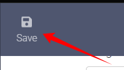

Setup Guide¶
Note
In this guide we will try to explain the basic setup you need to do to get started with Bazarr. For a more detailed few of all the setting check the following [LINK].
Before Bazarr works we need to setup and configure a few settings.
After installation and starting up, you open a browser and go to http://ip_where_installed:6767.
Sonarr¶
First we're going to setup Sonarr.
Settings => Sonarr
{kind=link}
Use Sonarr¶
Click on Enabled
{kind=link}
- Enable Sonarr.
-
Enter the hostname or the IP address of the computer running your Sonarr instance.
Info
Be aware that when using Bazarr in docker, you cannot reach another container on the same Docker host using the loopback address (ex.: 127.0.0.1 or localhost). Loopback address refer to the Bazarr Docker container, not the Docker host.
-
Enter the TCP port of your Sonarr instance. Default is 8989.
-
Mainly used by those who expose Sonarr behind a reverse proxy (ex.: /sonarr). Don't forget the leading slash. In fact, it should look exactly the same as in Sonarr settings. Mainly used when you use a reverse proxy.
Info
If you don't use a reverse proxy or don't know what it is leave this empty !!!
-
Enter your Sonarr API key here.
-
Enable this if your Sonarr instance is exposed trough SSL.
Info
Not needed if you reach it with a local IP address.
-
Click the
Testbutton after filling in all the fields. Make sure the test is successful before you proceed.
Options¶
{kind=link}
-
Select the minimum score (in percentage) required for a subtitles file to be downloaded.
Info
Are your subs often out of sync or just bad? Raise the score!
-
Episodes from series with those tags (case sensitive) in Sonarr will be excluded from automatic download of Subtitles. In Sonarr you add a custom tag to a show, in this case the shows with these tags will be ignored by Bazarr.
-
Episodes from series with these types in Sonarr will be excluded from automatic download of Subtitles.
Options:
Standard,Anime,Daily -
Automatic download of Subtitles will only happen for monitored shows/episodes in Sonarr.
Path Mappings¶
Note
You should only use this section if Sonarr and Bazarr use a different path to access the same files.
(for example if you run Sonarr on a different device then Bazarr or have a Synology and mix packages with Docker.)
{kind=link}
Click on Add and you will get a extra option
{kind=link}
- Here you enter the path that Sonarr uses to access your shows.
- Here you enter the path that Bazarr uses to access your shows.
Attention
IF YOU GOT THE SAME VALUES ON BOTH SIDES THEN YOU DON'T NEED IT !!!
IT SHOULD ALSO BE REMOVED OR ELSE YOU WILL GET A ERROR.
{kind=link}
Info
If everything runs on Docker you normally don't need to use this except if you got messed up paths and then it would be smarter to fix those first to have consistent and well planned paths.
Please take a look at TRaSH's Hardlink Tutorial https://trash-guides.info/hardlinks
Don't forget to Save your settings !!!

Radarr¶
Next we're going to setup Radarr.
Settings => Radarr
{kind=link}
Use Radarr¶
Click on Enabled
{kind=link}
- Enable Radarr.
-
Enter the hostname or the IP address of the computer running your Radarr instance.
Info
Be aware that when using Bazarr in docker, you cannot reach another container on the same Docker host using the loopback address (ex.: 127.0.0.1 or localhost). Loopback address refer to the Bazarr Docker container, not the Docker host.
-
Enter the TCP port of your Radarr instance. Default is 7878.
-
Mainly used by those who expose Radarr behind a reverse proxy (ex.: /radarr). Don't forget the leading slash. In fact, it should look exactly the same as in Radarr settings. Meanly used when you use a reverse proxy.
Info
If you don't use a reverse proxy or don't know what it is leave this empty !!!
-
Enter your Radarr API key here.
-
Enable this if your Radarr instance is exposed trough SSL.
Info
Not needed if you reach it with a local IP address.
-
Click the
Testbutton after filling in all the fields. Make sure the test is successful before you proceed.
Options (Radarr)¶
{kind=link}
-
Select the minimum score (in percentage) required for a subtitles file to be downloaded.
Info
Are your subs often out of sync or just bad? Raise the score!
-
Movies with those tags (case sensitive) in Radarr will be excluded from automatic download of Subtitles, In Radarr you add a custom tag to a movie.
-
Automatic download of Subtitles will only happen for monitored movies in Radarr.
Path Mappings (Radarr)¶
Note
You should only use this section if Radarr and Bazarr use a different path to access the same files.
(for example if you run Radarr on a different device then Bazarr or have a Synology and mix packages with Docker.)
{kind=link}
Click on Add and you will get a extra option
{kind=link}
- Here you enter the path that Radarr uses to access your movies.
- Here you enter the path that Bazarr uses to access your movies.
Attention
IF YOU GOT THE SAME VALUES ON BOTH SIDES THEN YOU DON'T NEED IT !!!
IT SHOULD ALSO BE REMOVED OR ELSE YOU WILL GET A ERROR.
{kind=link}
Info
If everything runs on Docker you normally don't need to use this except if you got messed up paths and then it would be smarter to fix those first to have consistent and well planned paths.
Please take a look at TRaSH's Hardlink Tutorial https://trash-guides.info/hardlinks
Don't forget to Save your settings !!!
Languages¶
Here we're going to configure which subtitle languages you prefer/want.
Settings => Languages
{kind=link}
Subtitles Language¶
Warning
**We don't recommend enabling Single Language option unless absolutely required (ie: media player not supporting language code in subtitles filename). Results may vary.
Be aware the language code (ex.: en) is not going to be included in the subtitles file name when enabling this.**
{kind=link}
Here you select which languages you want for your subtitles, you can just start typing your language name and it will show you what's available.
These languages are the subtitle languages you later use for the Languages Profiles
In this example I selected Dutch and English.
Languages Profiles¶
Select Add New Profile
{kind=link}
- How you want to name your language profile.
- Click on
Addto add the languages you enabled earlier in Subtitle Language. - Select the languages you want to enable for your profile (Including the optional settings).
- Forced => FAQ - What are Forced Subtitles
- HI => Hearing Impaired
- Exclude Audio => Exclude if matching audio
- Optional select the cutoff where you want that Bazarr stops downloading other languages.
- Save your settings.
Cutoff
{kind=link}
So you can have a profile that states: English, Dutch, German, French With cutoff Dutch, if it finds Dutch, it will download it and call it a day. If no Dutch is found it will continue searching the other languages till Dutch is found.
Default Settings¶
{kind=link}
Automatic applied Languages Profiles to Series and Movies added to Bazarr after enabling this option.
Don't forget to Save your settings !!!
Providers¶
Here we're going to select which Subtitle Providers you want to use.
Settings => Providers
{kind=link}
{kind=link}
- Click on the Plus sign box.
- Select the subtitles providers you would like to enable. it is best to select multiple providers and create/use a account with them especially when you got allot of wanted subtitles. Some subtitle providers requires a extra paid Anti-Captcha Service.
- Your enabled providers.
Tip
If possible don't forget to support them for their free service
Don't forget to Save your settings !!!
Subtitles¶
Here we will configure some extra settings for your subtitles
Settings => Subtitles
{kind=link}
Subtitle Options¶
{kind=link}
- Where you want your subtitles it's recommended to put them
AlongSide Media File. - If you want to upgrade previously downloaded subtitles.
- How many days to go back in history to upgrade them.
- If you want to upgrade manually downloaded subtitles.
Anti-Captcha Options¶
{kind=link}
Here you can select which Anti-Captcha provider you want to use.
Why (or) do I need the Anti-Captcha ?
Tip
We Recommend the following provider => https://anti-captcha.com/
Performance / Optimization¶
{kind=link}
- When searching for subtitles, Bazarr will search less frequently to limit call to providers.
- Search multiple providers at once (Don't choose this on low powered devices).
- If you want to use the embedded subtitles in the media files More Info
Automatic Subtitles Synchronization¶
Enable this option for automatic subtitles synchronization.
{kind=link}
Don't forget to Save your settings !!!
Now wait till Bazarr gets all the info needed from Sonarr/Radarr.
IMPORTANT¶
Important
Don't forget [First time installation configuration] !!!
If you still have questions please check the [Troubleshooting] section in the wiki. For more info about the other settings check the [Settings] wiki.